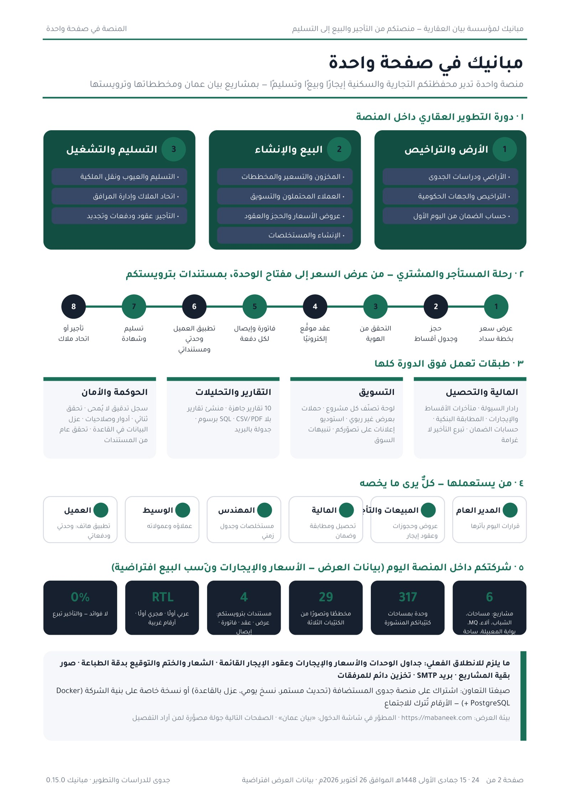

مبانيك في صفحة واحدة
دورة التطوير، رحلة العميل، الطبقات المشتركة، الأدوار، وأرقام شركتكم داخل المنصة — في صورة واحدة تغني عن قراءة الدليل كاملًا.

عن هذا الدليل
هذا الدليل يعرض منصة «مبانيك» — منصة التطوير العقاري من جدوى للدراسات والتطوير — كما تبدو لو كانت بيان عمان (الذراع العقارية لبيت بيان للاستثمار) تعمل عليها اليوم: مشاريعكم (مساحات الخوض، مركز الشباب للأعمال، آلاء بيزنس أفنيو، إم كيو ريزيدنسز، بوابة المعبيلة، ساحة الخوير)، مخططات كتيّباتكم الثلاثة وتصوراتها، وترويستكم على كل مستند يصدر.
- كل اللقطات في هذا الدليل مأخوذة من المنصة الفعلية (الإصدار 0.15.0) بعد تحميل بيانات الشركة المنشورة: 317 وحدة في 6 مشاريع و29 مخططًا وتصورًا.
- الأسعار والإيجارات ونِسب البيع والإنجاز والمستأجرون والمشترون افتراضية مبنية على مساحات الشركة المنشورة؛ الشركة لا تنشر أسعارها ولا إيجاراتها، وما يُستبدل بالبيانات الحقيقية يعمل بالمنطق نفسه.
- محفظتكم تجارية في معظمها، فيبدأ الدليل من التأجير (عقود المكاتب والمحلات، الدفعات الربعية، المتأخرات، التجديد، الإشغال) إلى جانب البيع — لا من البيع السكني وحده.
- لا نَعِد بميزة غير موجودة: ما لم يُجرَّب حيًّا بعدُ أو ما ينتظر قرارًا من الشركة مذكور صراحةً في الصفحتين الأخيرتين.
- المنصة عربية أولًا، من اليمين إلى اليسار، بالتاريخ الهجري قبل الميلادي، وبالتمويل الإسلامي وحده: لا فوائد ولا قروض ربوية؛ خطط السداد مرابحة أو أقساط، وغرامة التأخير تبرع لا إيراد.
لماذا الآن؟ ثلاث مشكلات يعيشها مطوّر يبيع ويؤجّر في آن واحد
محفظة تجارية بعشرة مشاريع تعني مئات المكاتب والمحلات: بعضها يُباع، وبعضها يُحتفظ به ويُؤجَّر، وكلها تحتاج الحقيقة الواحدة: من يشغل ماذا، ومن دفع كم، وأي عقد ينتهي الشهر القادم.
1. عقود الإيجار والدفعات الربعية في جداول متفرقة
عقد في ملف، ودفعة ربعية في كشف بنكي، وتجديد يُكتشف بعد انتهاء العقد. المتأخرات لا تظهر إلا حين يُراجع أحدهم الجدول يدويًا.
2. المبنى الواحد يُباع ويُؤجَّر معًا
في مساحات الخوض محلات ومكاتب للبيع وأخرى محتفظ بها للتأجير؛ بلا نظام واحد تختلط الحالات، وتغيب إشارة السعر والطلب على كل شريحة.
3. مجموعة بأكثر من كيان
بيت بيان للاستثمار ثم بيان عمان: كل كيان يحتاج بياناته معزولة وترويسته الخاصة، من غير أن تتعدد الأنظمة وتتكرر الحسابات.
مبانيك تضع الثلاثة في مكان واحد: محفظة تأجير حية بعقودها ودفعاتها، ومخزون للبيع على المخطط الحقيقي، ومطوّرون معزولون على مستوى قاعدة البيانات في منصة واحدة.
المنصة في صفحة واحدة
تتبع المنصة دورة التطوير العقاري الثلاثية، ويعمل فوقها طبقتان مشتركتان: المالية والتحصيل، والحوكمة والتقارير. كل مطوّر (كيان) معزول ببياناته، وكل مستخدم بدوره وصلاحياته.
1 · الأرض والتراخيص
- الأراضي ودراسات الجدوى
- التراخيص والجهات الحكومية
2 · البيع والإنشاء
- المخزون والتسعير والمخططات
- العملاء المحتملون والتسويق
- عروض الأسعار والحجز والعقود
- الإنشاء والمستخلصات
3 · التسليم والتشغيل
- التسليم والعيوب ونقل الملكية
- اتحاد الملاك وإدارة المرافق
- التأجير وخدمة العملاء
عبر الدورة
- السيولة والتعثر · الفواتير والضمان
- التقارير والتحليلات · سجل التدقيق
- الإدارة والأمان · هوية المستندات

دخول آمن باسم الشركة — وكيان لكل شركة في المجموعة
يختار المستخدم المطوّر «بيان عمان» ثم يدخل بكلمة المرور أو بحساب Google الخاص بالشركة. لا يُنشأ حساب من الخارج أبدًا: الهوية تُطابَق على حساب قائم أنشأه مدير النظام. قائمة المطوّر نفسها هي مكان الكيانات الأخرى للمجموعة إن أرادت بيت بيان للاستثمار محفظة منفصلة بترويستها.
- أدوار جاهزة: مدير عام، مبيعات، مالية، مهندس، مستثمر، وسيط، وعميل — كل دور يرى ما يخصه فقط.
- تحقق ثنائي (TOTP) برموز استرداد، جلسات بأجهزتها وإمكانية إنهائها عن بُعد، وقفل متدرّج ضد التخمين.
- كل كيان في المجموعة مطوّر معزول بصفوفه على مستوى قاعدة البيانات (RLS)، لا على مستوى التطبيق.


ما يحتاج قرارك اليوم
اللوحة لا تعرض أرقامًا فقط؛ تقترح قرارات مرتّبة بالأولوية والأثر المالي: فجوة سيولة متوقعة في حساب ضمان مشروع، مستخلص لا تدعمه أدلة الإنجاز، عميل يحتاج إعادة جدولة، أو شريحة مكاتب يُنصح برفع سعرها.
- المحفظة: 317 وحدة في 6 مشاريع (بيانات افتراضية على مساحات الكتيّبات الفعلية).
- السيولة: تنبؤ شهري بحساب الضمان لكل مشروع مع ذروة العجز المتوقعة وسببها.
- قرارات اليوم: كل قرار يحمل مصدره (رادار السيولة، التحقق من الإنجاز، نموذج التعثر، التسعير الديناميكي) وحالته.

مساحات الخوض: 20 محلًا و23 مكتبًا على مخطط حي
مخطط المبنى بطوابقه الثلاثة: الطابق الأرضي التجاري (20 محلًا 41.4–61.3 م² كما في الكتيّب)، ومكاتب الطابق الأول (12) والثاني بالشرفات (11). كل خلية وحدة بحالتها (متاحة، محجوزة، مباعة، محتفظ بها للتأجير) ونوعها. تحته «أداء الشرائح»: الطلب النسبي على كل نوع وإطلالة، وتوصية محرّك التسعير.
- الوحدات التجارية تحمل تصنيفها (use=commercial) فتُعامل ضريبيًا وتقريريًا كمكاتب ومحلات لا كشقق.
- الوحدات المحتفظ بها للتأجير لا تظهر في عروض البيع ولا في التسعير الديناميكي؛ لها شاشة التأجير الخاصة بها.
- الضغط على أي وحدة يفتح بطاقتها: السعر، الإطلالة، الحجز إن وُجد، وموقعها على مخطط الطابق.

مخططات كتيّباتكم الثلاثة داخل المنصة
صفحات كتيّبات مساحات الخوض ومركز الشباب وآلاء (الموقع، مخططات الطوابق، التصورات الداخلية والخارجية، المرافق) مرفوعة كمستندات ببصمة محتوى، ومخطط الطابق الأرضي لمساحات يحمل علامات المحلات العشرين.
- مواضع العلامات في هذه النسخة تقريبية؛ الموظف يضبطها بالنقر على المخطط («تحديد مواقع الوحدات»).
- المخططات العامة يراها العميل في تطبيقه؛ المخططات الإنشائية والكهروميكانيكية داخلية دائمًا.
- الملفات المرفوعة على بيئة العرض مؤقتة حتى يُربط تخزين دائم؛ عيّنات الشركة وحدها تعود تلقائيًا.


محفظة التأجير: العقود، الدفعات الربعية، المتأخرات، والتجديد
الوحدات التي تحتفظ بها الشركة (محلات ومكاتب في مساحات الخوض، ووحدات ساحة الخوير المكتمل) تظهر في شاشة التأجير بعقودها: المستأجر، الإيجار السنوي، دورية الدفعات (ربعية أو شهرية)، المدفوع والمتأخر، وتنبيه قبل انتهاء العقد بتسعين يومًا.
- المؤشرات: وحدات محفظة التأجير، نسبة الإشغال، الإيجار السنوي، والمتأخرات — تُحسب حيًّا من الدفعات.
- عقد جديد يُنشأ من الشاشة بتاريخ البداية والمدة والإيجار ودورية الدفع، فيولّد جدول الدفعات ومرجع البلدية.
- في بيانات العرض خمسة عقود افتراضية في مساحات الخوض: واحد متأخر دفعة، وواحد ينتهي خلال أسابيع (تنبيه تجديد).


عرض السعر لمكتب بخطة سداد غير ربوية
يُصدر موظف المبيعات عرض سعر مرقّمًا لوحدة متاحة بخطة سداد (مرتبطة بمراحل الإنجاز، أو 60/40، أو مرابحة عبر بنك إسلامي) وخصم ضمن صلاحيته. العرض لا يحجز الوحدة، ويتحوّل إلى حجز بضغطة واحدة بالسعر المعروض.
- عرض السعر PDF بترويسة الشركة وشعارها: الهجري أولًا، أرقام غربية، جدول دفعات صريح، ورمز تحقق مع QR.
- صلاحية محددة، وسقف خصم بحسب الدور (موظف المبيعات 2٪، صاحب صلاحية القرار حتى 15٪)؛ كل عرض في سجل التدقيق.
- العرض المرفق صدر فعليًا من المنصة للوحدة مكتب في مساحات الخوض لعميل متخيَّل.


الحجز، التحقق من الهوية، والعقد الموقَّع
الحجز يُنشئ جدول الأقساط فورًا؛ التحقق من الهوية (KYC) يسجّل الوثيقة ويقيّم المخاطر؛ العقد يصدر بنص موقَّع ببصمته، يوقّعه العميل من تطبيقه أو حضوريًا، ثم يُنشأ حسابه تلقائيًا.
- العقد يحوي شرط التبرع (بدل غرامة التأخير) معلَّمًا «تحتاج اعتماد مستشار شرعي» حتى تعتمده الشركة.
- لا تسليم بلا خطاب صرف، ولا صرف من الضمان إلا بمستخلص معتمد؛ القواعد في النواة لا في العُرف.
- كل مستند (عقد، فاتورة، إيصال) يُولَّد من القاعدة عند الطلب ولا يُخزَّن ملفًا، ويمكن التحقق منه علنًا برمزه.


الفاتورة والإيصال بترويسة الشركة
كل قسط مستحق يُصدر فاتورة (أو فاتورة ضريبية حين تنطبق الضريبة — وهي تنطبق على البيع التجاري)، وكل دفعة تُصدر إيصال استلام. الإرسال للعميل طباعةً، أو بريدًا بمرفق، أو برابط واتساب موقَّع صالح 30 يومًا.
- الترقيم متسلسل لكل سنة، والمبالغ بأرقام غربية والتواريخ هجري ثم ميلادي.
- الشعار والختم والتوقيع المعتمد تُرفع مرة واحدة من شاشة «هوية المستندات والختم» فتظهر على كل مستند.
- النموذجان أدناه صدرا من المنصة للعميل الأول في مساحات الخوض (بيانات افتراضية).


العميل يرى وحدته ومستنداته وموقعه على المخطط
تطبيق ويب للهاتف يدخله العميل بحسابه: وحدتي (تقدم البناء، الموعد المتوقع، وصور الإنجاز)، الدفعات (جدول الأقساط والدفع الإلكتروني)، الصيانة (طلبات بعد التسليم)، إعادة البيع (السوق الثانوي بموافقة المطوّر)، والمزيد (العقد، الفواتير، الإيصالات، المخططات، التصويت في اتحاد الملاك).
- يرى العميل مخطط طابقه وعلامة وحدته وحدها، ومخطط نموذج وحدته، والتصورات العامة.
- تغيير كلمة المرور إلزامي عند أول دخول؛ وله الخروج من كل الأجهزة الأخرى.
- تصدير بياناته الشخصية وطلبات الخصوصية من التطبيق مباشرة.


رادار السيولة وتعثر العملاء — وتبرع التأخير بدل الغرامة
تنبؤ شهري بالتدفقات لكل حساب ضمان، مع المحرّكات (مستخلص، دفعات مجدولة) وذروة العجز المتوقعة. وقائمة العملاء المعرّضين للتعثر بدرجاتهم واقتراح إعادة الجدولة قبل التأخر لا بعده.
- المتأخرات بأعمارها (30/60/90 يومًا) وقائمة الأقساط المتأخرة بالعميل والوحدة؛ ومتأخرات الإيجار في شاشة التأجير.
- التأخير لا يولّد غرامة إيرادًا؛ يُقيَّد تبرعًا بشرط التبرع في العقد (1٪ شهريًا بعد 15 يومًا كقيمة مؤقتة تُراجَع مع المستشار الشرعي)، ويمكن إعفاؤه.
- الفواتير وضريبة القيمة المضافة (5٪ على البيع التجاري)، والمطابقة البنكية باستيراد الكشف، وحساب ضمان لكل مشروع: لا صرف إلا بمستخلص معتمد واحتجاز 10٪ حتى التسليم.


الإنجاز الفعلي مقابل المبيعات
المستخلصات (IPC) تُعتمد بنسبة يدعمها الدليل (صور ومحاضر)؛ حين تعلن نسبة أعلى من الأدلة يقترح النظام اعتماد النسبة المدعومة ويقدّر الصرف الزائد المتجنَّب. الجدول الزمني يُقارن بالمبيعات ليظهر المشروع الذي يبيع أسرع مما يُبنى أو العكس.
- مساحات الخوض عند 64٪ إنجاز (افتراضيًا) مقابل بيع نصف المحلات؛ مركز الشباب في بداياته برخصة البناء 2024/1593.
- آلاء بيزنس أفنيو 36٪ إنجاز: مرحلة الهيكل الخرساني هي محرّك ذروة السيولة على اللوحة.
- كل اعتماد مستخلص بصلاحية مستقلة (approve_ipc) وسطر تدقيق.

إم كيو ريزيدنسز قرب التسليم، وساحة الخوير مكتملًا باتحاد ملاك
التسليم يُجدول بموعد ويُوثَّق بشهادة ومحضر ملاحظات (العيوب) وقراءات عدادات ومفاتيح، ولا يكتمل قبل سداد دفعة التسليم. بعد الاكتمال يتولى اتحاد الملاك الميزانية والتصويت الموزون بمساحة الوحدة من تطبيق العميل.
- إم كيو ريزيدنسز (سكني، 92٪ إنجاز افتراضيًا): مواعيد التسليم والملاحظات المفتوحة.
- ساحة الخوير (مكتمل ومسلَّم): اتحاد الملاك، الميزانية، والتصويت على البنود، ووحداته المحتفظ بها مؤجَّرة.
- إدارة المرافق ونقل الملكية في التبويبات المجاورة.


عشرة تقارير جاهزة ومنشئ تقارير بلا SQL
تقارير جاهزة بالنقر (المحفظة، أداء المبيعات، قمع العملاء، عروض الأسعار، الوسطاء، التحصيل والمتأخرات، السيولة، المخزون، الإنشاء، التسليم) بمعاملات ورسوم؛ ومنشئ تقارير على مجموعات بيانات معتمدة بفلاتر وتجميع، وتصدير CSV/PDF برسوم، وحفظ وجدولة بالبريد.
- الرسوم تُرسم داخل المنصة بلا مكتبة خارجية، وفي PDF بالمحرّك نفسه.
- تقارير الممولين والمستثمرين بصلاحيات مستقلة؛ ومؤشرات الإشغال والإيجار السنوي والمتأخرات في شاشة التأجير.
- التقريران المرفقان (المحفظة، التحصيل) صدرا من المنصة بترويسة الشركة.


لوحة التسويق: أي مشروع يحتاج تدخلًا اليوم
تصنّف اللوحة كل مشروع من بياناته الحية (وتيرة البيع 30/90 يومًا مقابل المخطط، الطلب النسبي على الشرائح، العملاء المتوقفون، الإنجاز) إلى: إطلاق، ضعيف البيع، مستقر، شبه مكتمل، مكتمل — مع إشارات وإجراءات مقترحة وزرّ «حملة جديدة» و«إعلان».
- الحملة تحمل عرضًا هيكليًا فقط (تأجيل، تقسيط، إعفاء رسوم، باقات)؛ المنصة ترفض أي عرض بفائدة.
- رمز تتبع لكل حملة يقيس العملاء الواردين وكلفة العميل؛ الإرسال بريدًا/واتساب مسجَّل.
- في هذه اللقطة التجريبية صُنّف إم كيو ريزيدنسز «ضعيف البيع» (قرب التسليم ووحدات غير مباعة) وآلاء «مستقرًا» لأن مبيعاته الافتراضية أسرع من مخططه؛ التصنيف يُحسب من البيانات الحية ويتغيّر معها.


إعلان جاهز على تصوّر مساحات الخوض الحقيقي
ستة قوالب (تشويقي، إطلاق، عرض خاص، آخر الوحدات، تقدم البناء، جاهزة للسكن) بثلاثة مقاسات، النص العربي مركَّب برمجيًا على صورة الخلفية التي تختارونها — هنا تصور مساحات الخوض من الكتيّب — بشعار الشركة وبيانات التواصل، بلا أشخاص.
- الإعلانان أدناه أُنتجا من الاستوديو في المنصة (قالب الإطلاق، وآخر الوحدات — مقاس مربع).
- يُحفظ الإعلان مستندًا PNG وPDF ويُربط بحملة ويُرسل لجمهورها.
- التنبيهات التسويقية تُسجَّل يوميًا من حركة السوق (توقف عملاء، انخفاض وتيرة، فرصة رفع سعر).


سجل تدقيق لا يُمحى، وتحقق عام من كل مستند
كل فعل في المنصة سطر في سجل تدقيق مسلسل ببصمة (hash chain) لا يستطيع أحد تعديله؛ البيانات الشخصية مشفّرة في القاعدة؛ وكل كيان معزول بصفوفه على مستوى قاعدة البيانات لا على مستوى التطبيق.
- المستخدمون والأدوار: إضافة، تعديل البريد، إنهاء الجلسات، إعادة ضبط التحقق الثنائي.
- هوية المستندات والختم: اسم الشركة، السجل التجاري، الرقم الضريبي، العنوان، الشعار، الختم، والتوقيع.
- صفحة التحقق العامة /verify: تُظهر النوع والرقم والتاريخ وبصمة المحتوى بلا أي بيانات شخصية.


ما تحتاجه بيان للانطلاق الفعلي
كل ما في هذا الدليل يعمل اليوم على بيانات افتراضية. لتصبح المنصة منصة بيان عمان فعلًا نحتاج من الشركة:
- جداول الوحدات والأسعار والإيجارات الفعليةلكل مشروع: رموز الوحدات، المساحات، الحالة (للبيع / محتفظ بها)، الأسعار، والإيجارات السنوية ودورية الدفع، وخطط السداد المعتمدة.
- عقود الإيجار القائمةالمستأجرون وبداية كل عقد ونهايته والدفعات المسددة؛ تُستورد دفعة واحدة فتظهر المتأخرات والتجديدات من اليوم الأول.
- الشعار والختم والتوقيع بدقة الطباعةملفات PNG شفافة بدقة عالية؛ الشعار الحالي بدقة الموقع الإلكتروني فقط.
- صور ومخططات بقية المشاريعأماكن، عمان بوست القرم والخوض، بركاء هول، مساحات 1، وإم كيو ريزيدنسز: لا مادة عامة كافية لها؛ الكتيّبات الثلاثة وحدها في المنصة.
- حساب بريد SMTP ونطاقلإرسال المستندات والتنبيهات وروابط الدخول من بريد الشركة؛ اليوم البريد في وضع «صندوق صادر».
- WhatsApp Business (اختياري)اليوم الإرسال برابط wa.me من جهاز الموظف؛ الإرسال الآلي يحتاج حساب Business API ومزوّدًا.
- تخزين دائم للمرفقاتالمخططات والمستندات المرفوعة تحتاج تخزينًا دائمًا (Volume أو S3) قبل أول استعمال فعلي.
- اعتماد الصياغات الشرعية والقانونيةصيغة شرط التبرع وعقد البيع وعقد الإيجار النموذجيين من مستشار الشركة الشرعي والقانوني.
- حسابات المستخدمين والكياناتقائمة الموظفين وأدوارهم؛ وهل تُفصل محفظة بيت بيان للاستثمار كيانًا مستقلًا؛ والسماح بدخول Google على نطاق الشركة إن رغبتم.
صيغتا التعاون
تُترك الأرقام للاجتماع. الفرق الجوهري بين الصيغتين: من يشغّل، ومن يملك، وكيف تصل التحديثات.
| الوجه | اشتراك على منصة جدوى المستضافة | نسخة خاصة على بنية الشركة |
|---|---|---|
| الملكية | ترخيص استخدام؛ الشيفرة والتشغيل لدى جدوى | نسخة مرخَّصة تُنشر على خوادم الشركة (Docker + PostgreSQL) |
| العزل والبيانات | كل كيان معزول بصفوفه (RLS) على قاعدة مشتركة؛ البيانات ملك الشركة وتُصدَّر عند الطلب | قاعدة بيانات خاصة بالكامل داخل بنية الشركة |
| الكيانات المتعددة | مطوّر لكل كيان في المجموعة على الاشتراك نفسه | مطوّر لكل كيان داخل النسخة الخاصة |
| التحديثات | مستمرة وتلقائية مع كل إصدار | بحسب اتفاق الصيانة؛ تُطبَّق على نسخة الشركة |
| النسخ الاحتياطي | يومي من جدوى مع تمرين استرجاع | مسؤولية فريق الشركة بدليل التشغيل RUNBOOK |
| الدعم والتدريب | ضمن الاشتراك | ضمن عقد التنفيذ والصيانة |
| الكلفة الأولية | ||
| الكلفة الدورية |
الخانات الفارغة تُملأ في الاجتماع. في الحالتين: ترخيص واحد لمطوّر واحد، والبيانات ملك الشركة، ودليل التشغيل ودليل الأمان ضمن التسليم.
ما يجب أن يُقال بصراحة
- الأسعار والإيجارات ونِسب البيع والإنجاز والمستأخرون والمشترون في هذا الدليل افتراضية، مبنية على مساحات الكتيّبات المنشورة (الشركة لا تنشر أسعارها ولا إيجاراتها)؛ ووحدات إم كيو ريزيدنسز افتراضية بالكامل.
- لا صور لأماكن وعمان بوست وبركاء هول ومساحات 1 في المنصة بعد؛ ومواضع علامات المحلات على مخطط الطابق تقريبية؛ الاسم العربي «بيان عمان» مأخوذ من موقعكم وحسابكم على إنستغرام.
- عقد الإيجار يُدار بياناته (المستأجر، الدفعات، التجديد) ولا تُصدر المنصة بعدُ نموذج عقد إيجار PDF كما تُصدر عقد البيع؛ يُضاف عند اعتماد صيغتكم.
- البريد في وضع «صندوق صادر» حتى يُضبط SMTP؛ وواتساب عبر روابط wa.me لا عبر Business API.
- الملفات التي يرفعها الموظفون على بيئة العرض مؤقتة حتى يُربط تخزين دائم؛ عيّنات الشركة وحدها تعود تلقائيًا.
- لقطات هذا الدليل التُقطت من نسخة محلية مطابقة للإصدار المنشور (0.15.0) لأن كلمة مرور بيئة العرض لا تُكتب في أي ملف؛ ورموز التحقق في النماذج المرفقة صدرت من تلك النسخة فلا تُستعلم على الموقع الحي.
- ما لم يُجرَّب حيًّا بعد: بوابة الدفع العُمانية (اليوم محاكاة)، الربط مع الجهات الحكومية، وWhatsApp Business.
ما عدا ذلك يعمل اليوم على الرابط الحي، ويمكن للشركة تجربته بحسابات تجربة خاصة بها.
الخطوة التالية: اجتماع عرض حي
نقترح اجتماعًا لمدة ساعة في مقر الشركة بالعذيبة نعرض فيه المنصة حيّة على بيانات مساحات الخوض (تأجيرًا وبيعًا)، ونستلم فيه قائمة الاحتياجات أعلاه، ونتفق على الصيغة والجدول الزمني للانطلاق.
- جدوى للدراسات والتطوير — مسقط · jadwa.om
- رابط المنصة: https://mabaneek.com
- المطوّر في شاشة الدخول: «بيان عمان»